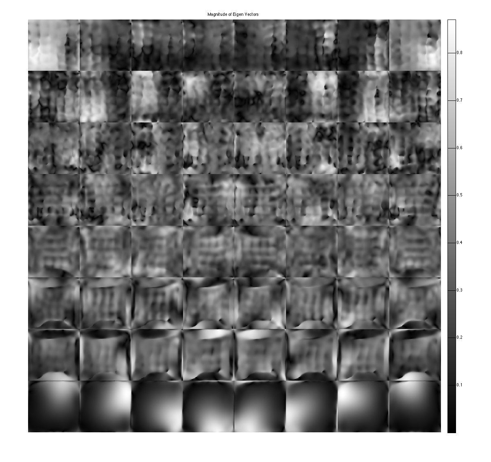
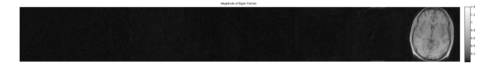

ESPIRiT Maps Demo
This is a demo on how to generate ESPIRiT maps. It is based on the paper Uecker et. al, MRM 2013 DOI 10.1002/mrm.24751. ESPIRiT is a method that finds the subspace of multi-coil data from a calibration region in k-space using a series of eigen-value decompositions in k-space and image space.
Contents
Set parameters
load brain_8ch [sx,sy,Nc] = size(DATA); ncalib = 24; % use 24 calibration lines to compute compression ksize = [6,6]; % kernel size % Threshold for picking singular vercors of the calibration matrix % (relative to largest singlular value. eigThresh_1 = 0.02; % threshold of eigen vector decomposition in image space. eigThresh_2 = 0.95; % crop a calibration area calib = crop(DATA,[ncalib,ncalib,Nc]);
Display coil images:
im = ifft2c(DATA); figure, imshow3(abs(im),[],[1,8]); title('magnitude of physical coil images'); colormap((gray(256))); colorbar; figure, imshow3(angle(im),[],[1,8]); title('phase of physical coil images'); colormap('default'); colorbar;
Compute ESPIRiT EigenVectors
Here we perform calibration in k-space followed by an eigen-decomposition in image space to produce the EigenMaps.
% compute Calibration matrix, perform 1st SVD and convert singular vectors % into k-space kernels [k,S] = dat2Kernel(calib,ksize); idx = max(find(S >= S(1)*eigThresh_1));
This shows that the calibration matrix has a null space as shown in the paper.
kdisp = reshape(k,[ksize(1)*ksize(2)*Nc,ksize(1)*ksize(2)*Nc]); figure, subplot(211), plot([1:ksize(1)*ksize(2)*Nc],S,'LineWidth',2); hold on, plot([1:ksize(1)*ksize(2)*Nc],S(1)*eigThresh_1,'r-','LineWidth',2); plot([idx,idx],[0,S(1)],'g--','LineWidth',2) legend('signular vector value','threshold') title('Singular Vectors') subplot(212), imagesc(abs(kdisp)), colormap(gray(256)); xlabel('Singular value #'); title('Singular vectors')

crop kernels and compute eigen-value decomposition in image space to get maps
[M,W] = kernelEig(k(:,:,:,1:idx),[sx,sy]);
show eigen-values and eigen-vectors. The last set of eigen-vectors corresponding to eigen-values 1 look like sensitivity maps
figure, imshow3(abs(W),[],[1,8]); title('Eigen Values in Image space'); colormap((gray(256))); colorbar; figure, imshow3(abs(M),[],[8,8]); title('Magnitude of Eigen Vectors'); colormap(gray(256)); colorbar; figure, imshow3(angle(M),[],[8,8]); title('Magnitude of Eigen Vectors'); colormap(jet(256)); colorbar;
Warning: Image is too big to fit on screen; displaying at 67% Warning: Image is too big to fit on screen; displaying at 67%
project onto the eigenvectors. This shows that all the signal energy lives in the subspace spanned by the eigenvectors with eigenvalue 1. These look like sensitivity maps.
% alternate way to compute projection is: % ESP = ESPIRiT(M); % P = ESP'*im; P = sum(repmat(im,[1,1,1,Nc]).*conj(M),3); figure, imshow3(abs(P),[],[1,8]); title('Magnitude of Eigen Vectors'); colormap(sqrt(gray(256))); colorbar; figure, imshow3(angle(P),[],[1,8]); title('Magnitude of Eigen Vectors'); colormap((jet(256))); colorbar;
crop sensitivity maps
maps = M(:,:,:,end).*repmat(W(:,:,end)>eigThresh_2,[1,1,Nc]); figure, imshow3(abs(maps),[],[1,8]); title('Absolute sensitivity maps'); colormap((gray(256))); colorbar; figure, imshow3(angle (maps),[],[1,8]); title('Phase of sensitivity maps'); colormap((jet(256))); colorbar;
ESPIRiT with Aliased Calibration
Here we perform ESPIRiT calibration on data which has strong aliasing in the phase-encode direction. SENSE often fails with this type of data.
load brain_alias_8ch ncalib = 24; % use 24 calibration lines to compute compression ksize = [6,6]; eigThresh_1 = 0.02; eigThresh_2 = 0.95; [sx,sy,Nc] = size(DATA); calib = crop(DATA,[ncalib,ncalib,Nc]);
Display coil images:
im = ifft2c(DATA); figure, imshow3(abs(im),[],[1,8]); title('magnitude of physical coil images'); colormap((gray(256))); colorbar; figure, imshow3(angle(im),[],[1,8]); title('phase of physical coil images'); colormap('default'); colorbar;

Compute Aliased ESPIRiT Maps
% compute Calibration matrix, perform 1st SVD and convert singular vectors % into k-space kernels [k,S] = dat2Kernel(calib,ksize); idx = max(find(S >= S(1)*eigThresh_1));
This shows that the calibration matrix has a null space as shown in the paper. However the signal subspace is bigger because of the aliasin and the tighter FOV of the imaged object.
kdisp = reshape(k,[ksize(1)*ksize(2)*Nc,ksize(1)*ksize(2)*Nc]); figure, subplot(211), plot([1:ksize(1)*ksize(2)*Nc],S,'LineWidth',2); hold on, plot([1:ksize(1)*ksize(2)*Nc],S(1)*eigThresh_1,'r-','LineWidth',2); plot([idx,idx],[0,S(1)],'g--','LineWidth',2) legend('signular vector value','threshold') title('Singular Vectors') subplot(212), imagesc(abs(kdisp)), colormap(gray(256)); xlabel('Singular value #'); title('Singular vectors')
crop kernels and compute eigen-value decomposition in image space to get maps
[M,W] = kernelEig(k(:,:,:,1:idx),[sx,sy]);
show eigen-values and eigen-vectors. The last set of eigen-vectors corresponding to eigen-values 1 look like sensitivity maps
figure, imshow3(abs(W),[],[1,8]); title('Eigen Values in Image space'); colormap((gray(256))); colorbar; figure, imshow3(abs(M),[],[8,8]); title('Magnitude of Eigen Vectors'); colormap(gray(256)); colorbar; figure, imshow3(angle(M),[],[8,8]); title('Magnitude of Eigen Vectors'); colormap(jet(256)); colorbar;
Warning: Image is too big to fit on screen; displaying at 33% Warning: Image is too big to fit on screen; displaying at 33%
project onto the eigenvectors. This shows that all the signal energy lives in the subspace spanned by the eigenvectors with eigenvalue 1. These look like sensitivity maps -- Note that where there's aliasing there are multiplicities of eigenvalues ==1, so there is a second component.
P = sum(repmat(im,[1,1,1,Nc]).*conj(M),3); figure, imshow3(abs(P),[],[1,8]); title('Magnitude of Projection onto Eigen Vectors'); colormap(sqrt(gray(256))); colorbar; figure, imshow3(angle(P),[],[1,8]); title('Phase of projection onto Eigen Vectors'); colormap((jet(256))); colorbar;
crop sensitivity maps according to eigenvalues==1. Note that we have to use 2 sets of maps.
maps = M(:,:,:,end-1:end).*repmat(permute(W(:,:,end-1:end)>eigThresh_2,[1,2,4,3]),[1,1,Nc,1]); figure, imshow3(abs(maps),[],[2,8]); title('Absolute sensitivity maps'); colormap((gray(256))); colorbar; figure, imshow3(angle (maps),[],[2,8]); title('Phase of sensitivity maps'); colormap((jet(256))); colorbar;